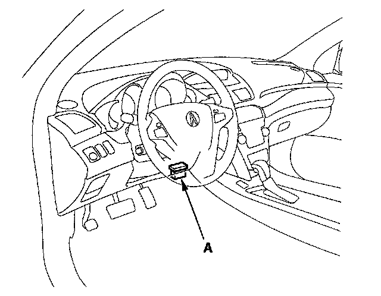

How to Update the PCM
How to Update the PCMNOTE:
^ Make sure the HDS/HIM has the latest software version.
^ Before you update the PCM, make sure the battery in the vehicle is fully charged.
^ Never turn the ignition switch OFF during the update. If there is a problem with the update, leave the ignition switch ON.
^ To prevent PCM damage, do not operate anything electrical (headlights, audio system, brakes, A/C, power windows, moonroof, door locks, and whatnot) during the update.
^ To ensure the latest program is installed, do a PCM update whenever the PCM is substituted or replaced.
^ You cannot update a PCM with a program it already has. It will only accept a new program.
^ High temperature in the engine compartment might cause the PCM to become too hot to run the update. If the engine has been running before this procedure, open the hood and cool the engine compartment.
^ If you need to diagnose the Honda interface module (HIM) because the HIM's red (# 3) lamp came on or was flashed during the update, leave the ignition switch in the ON (II) position when you disconnect the HIM from the data link connector (DLC). This will prevent PCM damage.
1. Turn the ignition switch ON (II), but do not start the engine.
2. Connect the HDS to the DLC (A).

3. Make sure the HDS communicates with the PCM. If it doesn't, go to the DLC circuit troubleshooting. If you are returning from the DLC circuit troubleshooting, skip steps 4 and 5, and clean the throttle body after you update the PCM.
4. Select the INSPECTION MENU with the HDS.
5. Select the ETCS TEST, then select the TP POSITION CHECK, and follow the HDS screen prompts.
NOTE: If the TP POSITION CHECK indicates FAILED, continue this procedure.
6. Exit the HDS diagnosis system, then select the update mode, and follow the screen prompts to update the PCM.
7. If the software in the PCM is the latest, disconnect the HDS/HIM from the DLC, and go back to the procedure that you were doing. If the software in the PCM is not the latest, follow the instructions on the screen. If prompted to choose the PGM-FI system or the A/T system, make sure you update both.
NOTE: If the PCM update system requires you to cool the PCM, follow the instructions on the screen. If you run into a problem during the update procedure (programming takes over 15 minutes, status bar goes over 100 %, D or immobilizer light flashes, HDS tablet freezes, and whatnot), follow these steps to minimize the chance of damaging the PCM:
^ Leave the ignition switch in the ON (II) position.
^ Connect a jumper battery (do not connect a battery charger).
^ Shut down the HDS.
^ Disconnect the HDS from the DLC.
^ Reboot the HDS.
^ Reconnect the HDS to the DLC, and try the update procedure again.
8. Select the ETCS TEST, then select the TP POSITION CHECK, and follow the HDS screen prompts. If the TP POSITION CHECK failed, clean the throttle body.
9. Do the PCM idle learn procedure.
10. Do the CKP learn procedure.